Student · Musician · Future Clinical Chemist
"Honesty is the foundation of growth because only by being honest with ourselves can we become better people."
I am Demian Amaya, a student from Cananea, Sonora, Mexico. I am passionate about music, sports, entertainment, and personal growth. I enjoy watching shows, reading, playing the drums, and constantly challenging myself to improve. Although I am still discovering my purpose in life, I strive to make meaningful progress every day. I believe that honesty, discipline, and creativity are essential qualities that help people reach their full potential.
Discover My StoryI was born on October 10, 2008, in Cananea, Sonora, where I have lived my entire life. I grew up with my mother and my brother, who have always been important parts of my life. My mother has been a major influence because she has taught me valuable lessons that continue to guide me today.
I attended INAM during kindergarten and later studied at Minerva Elementary School. One unusual aspect of my childhood is that I do not remember much about my life before the fourth grade.
During elementary school, I was a quiet child with few friends, but I was also very athletic and one of the fastest students in school. I became interested in horror content and YouTube videos. My favorite movie was How to Train Your Dragon, which I watched with my cousin Emilio.
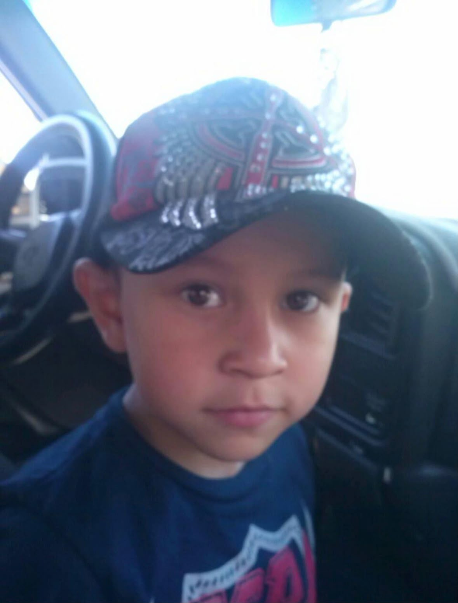
I have faced several challenges in my life, but I am grateful for the people who make everything easier. These experiences shaped my resilience, optimism, and the importance of focusing on the present moment.
One of the biggest challenges has been the constant pressure to improve myself. Sometimes I feel like I cannot satisfy my father's expectations, but I continue trying my best every single day.
I once became seriously ill and experienced symptoms that suggested I might have a severe medical condition. It was one of the most frightening moments of my life and taught me to truly appreciate my health.
These experiences taught me that challenges are not the end — they are teachers. Resilience, optimism, and focusing on the present moment are the gifts these difficult times gave me.
From science competitions to live performances, my achievements reflect a passion for learning, creativity, and pushing boundaries.
Won a science competition during middle school at Tecnológico de Cananea — sparking a love for chemistry.
Performed on drums at the Feria del Cobre, one of the most memorable experiences of my musical journey.
Founded my own band, Amelia, where I continue to develop my musical skills and create memorable experiences.
Participated in volleyball events in Cananea and Agua Prieta; practiced boxing, baseball, and wrestling.
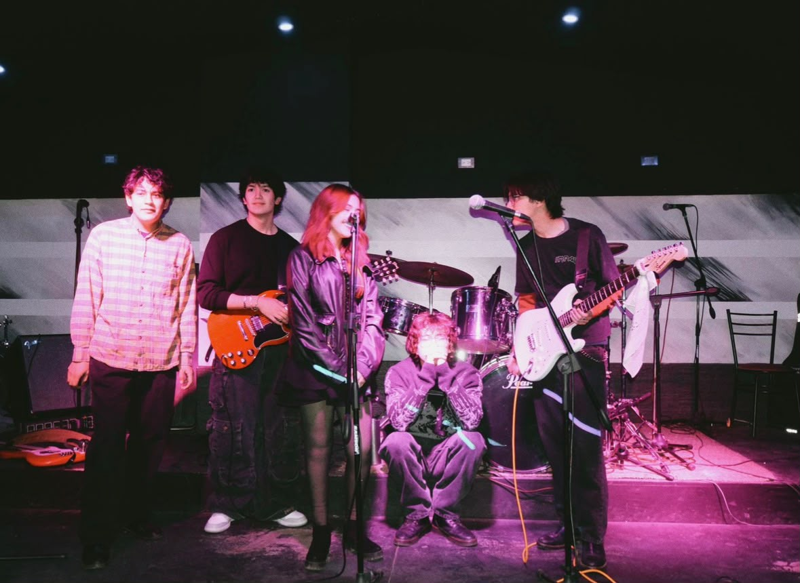
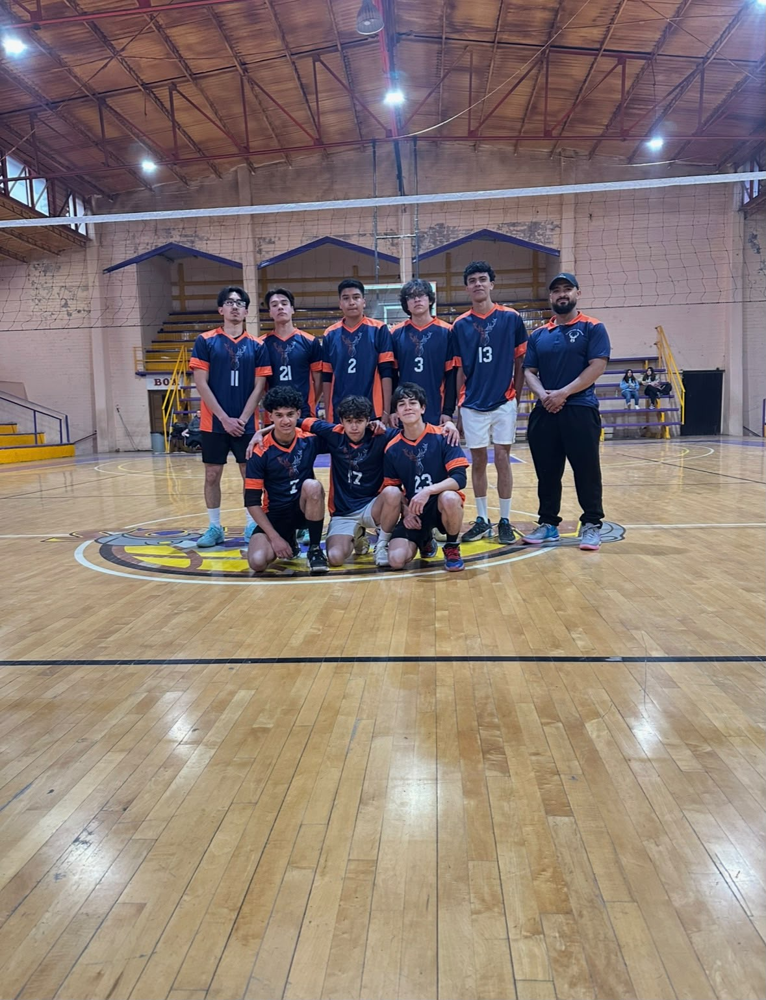
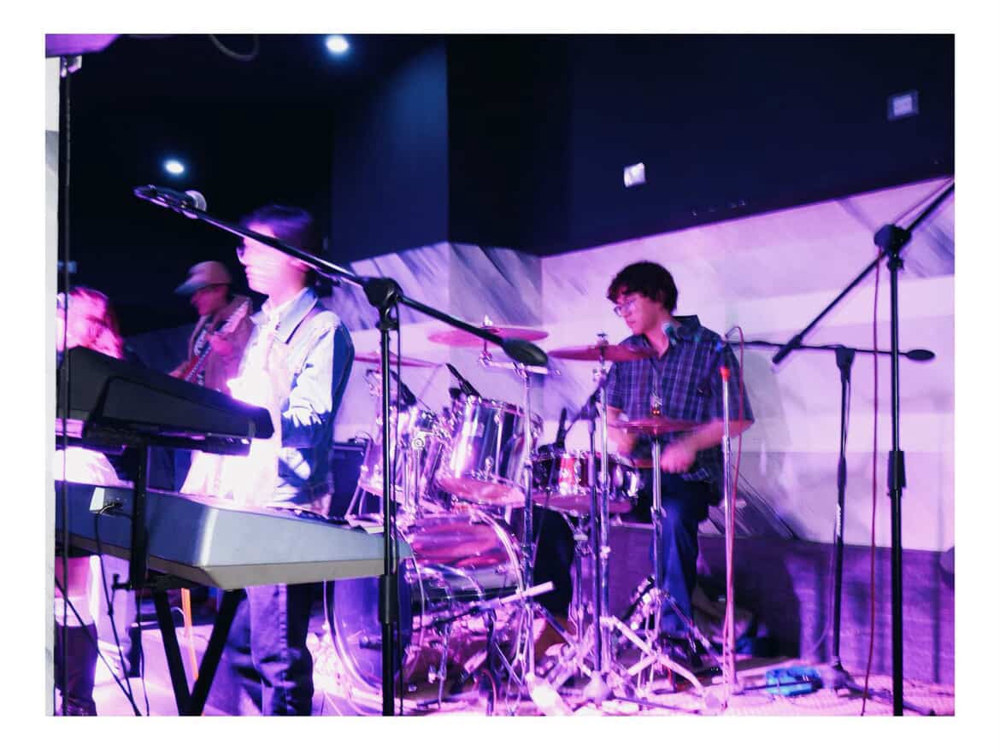
Today, I am a creative, selective, and spontaneous person who enjoys trying new things and meeting new people. I value honesty above everything else because I believe being honest with yourself is the key to personal growth.
Music, sports, science, and self-improvement are important parts of my identity. The people who have influenced me the most are my mother, my brother, and my closest friends.
I plan to study Clinical Chemistry and Biology because I enjoy science and want a stable, fulfilling career. I also plan to continue playing music and eventually own my own music studio.
In ten years, I see myself traveling, working in science, making music, and continuing to improve as a person.
Pursue higher education in science for a stable career I love.
Apply my knowledge professionally while continuing to grow.
Blend science and art — keep making music a part of my life forever.
See the world and never stop challenging myself to be better.
"Life has taught me that many of the things we worry about never happen the way we imagine."
Every challenge I have faced has helped me become stronger and taught me valuable lessons that no classroom could provide.
I have learned that happiness comes from growth, meaningful relationships, and appreciating opportunities rather than trying to be perfect.
Growth is not a destination — it is a continuous journey shaped by honesty, resilience, and the courage to keep moving forward.
A collection of personal photographs capturing the people, places, and experiences that have shaped who I am.
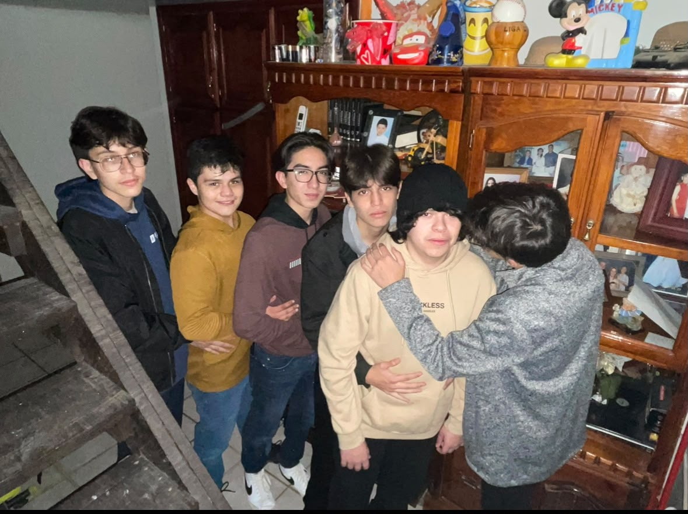
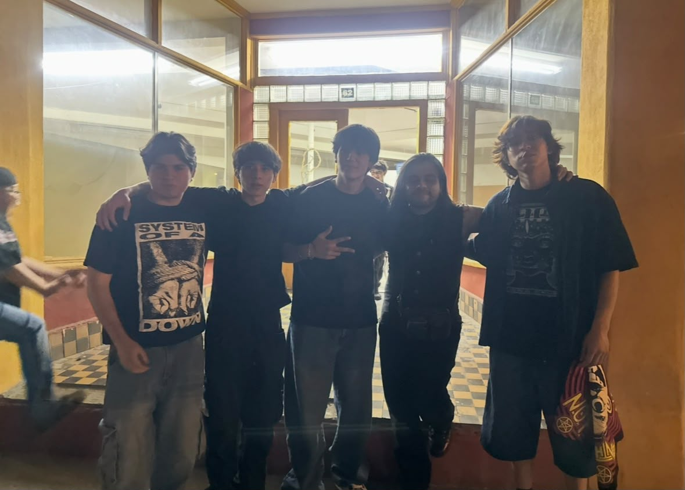
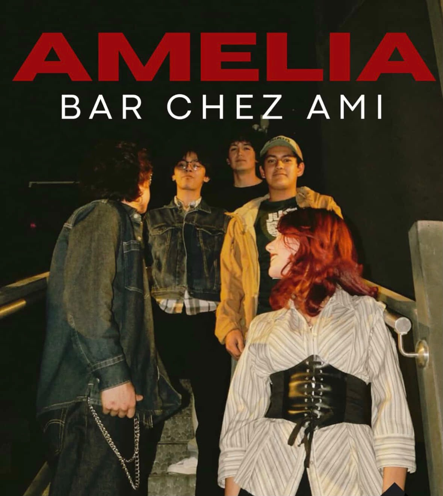
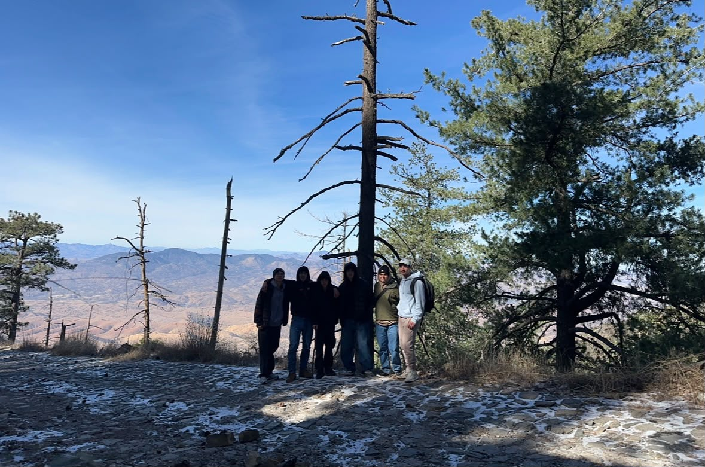
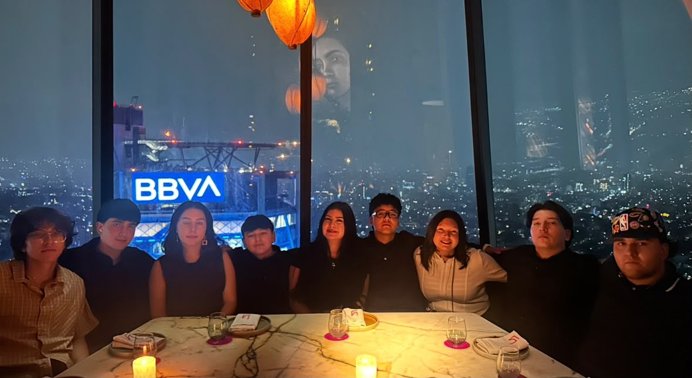
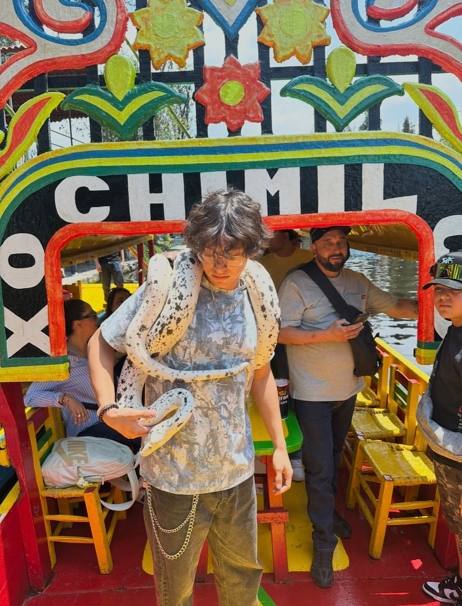
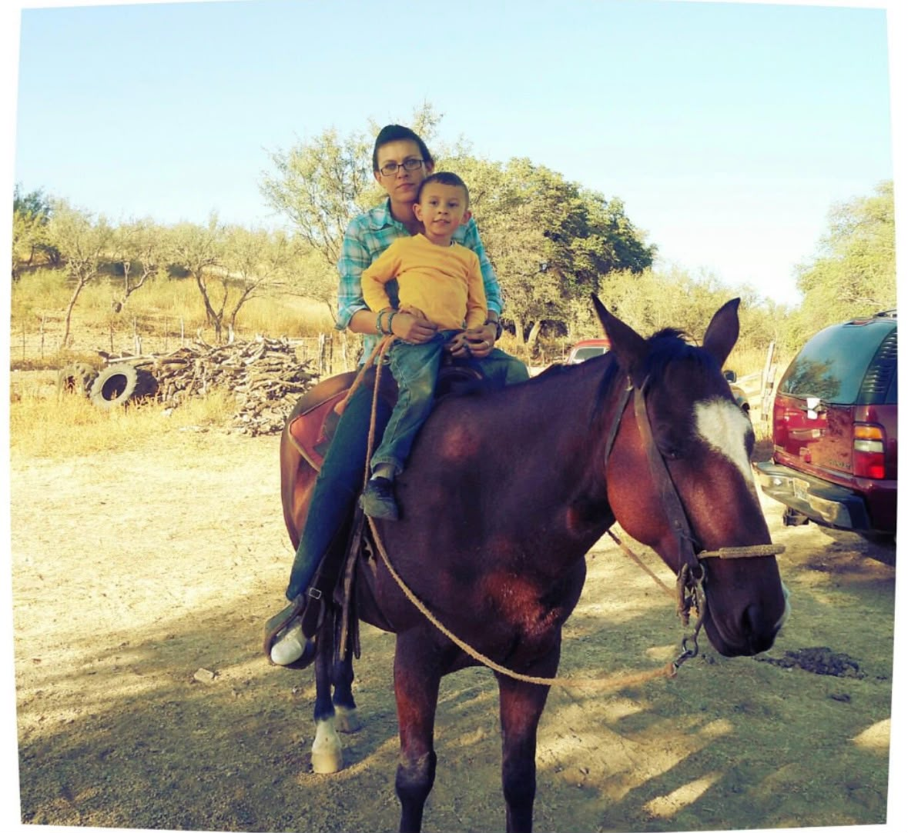
Add Your Photo Here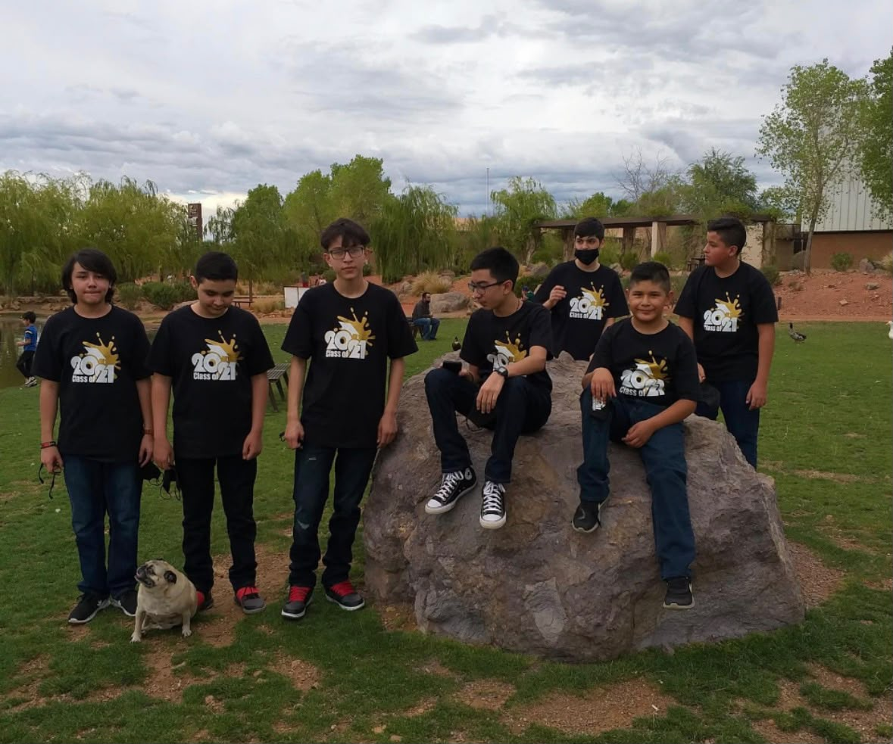
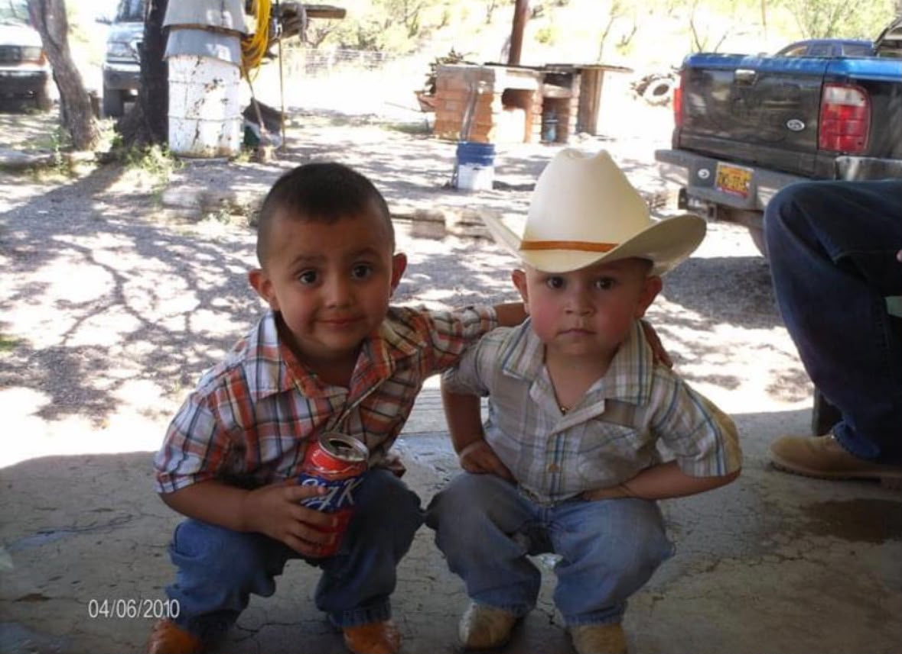